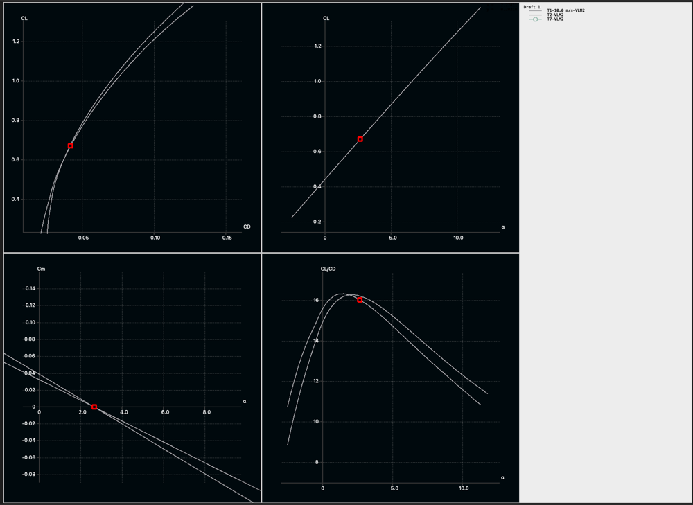
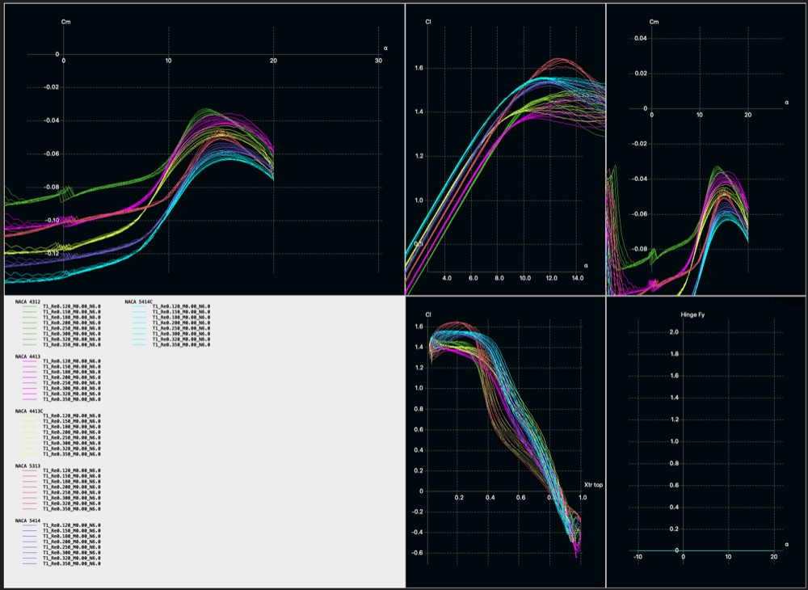
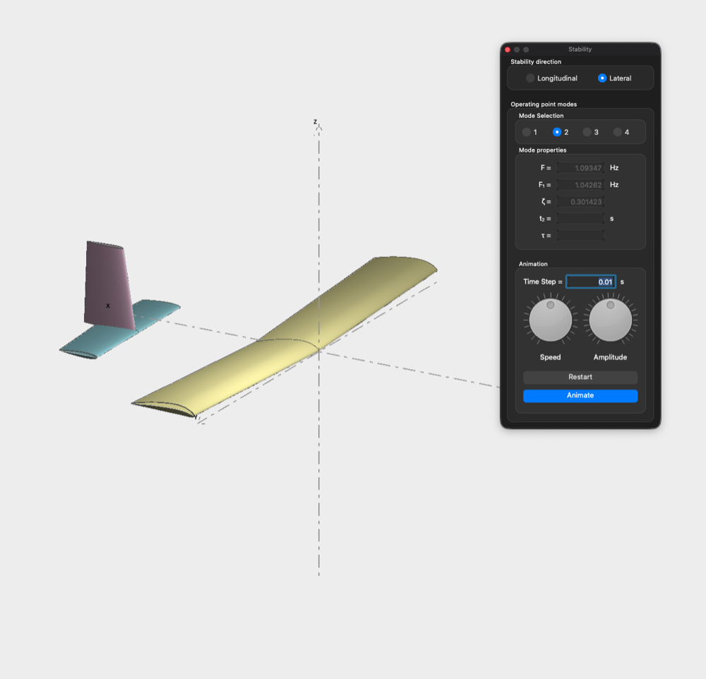

Goal: Make a trainer plane to learn the fundamentals of remote control flight.
Mission Objectives:
- 30 min of flight
- <20 m/s take-off and landing
- <0.5m wingspan
- <500 g
- Naturally aerodynamically stable flight without stability aids
Coming from 4 – wheeled vehicles, the world of plane dynamics are still mostly mysterious to me. I have joined the UTAS club to reach more people.
Today, I played around with direct foil design and gaining exposure to Reynold’s number work and simulation. The core idea of the foil design was a foil that stalled late and progressively. It involved leading edge radius work, trailing edge angle, and other general foil characteristics.
From foil design I moved to the plane design where I tried matching peak CL/CD with the alpha that the plane is naturally stable at. I am sure there is a lot of information that I just do not know to look for in these graphs. I am very excited to learn.


